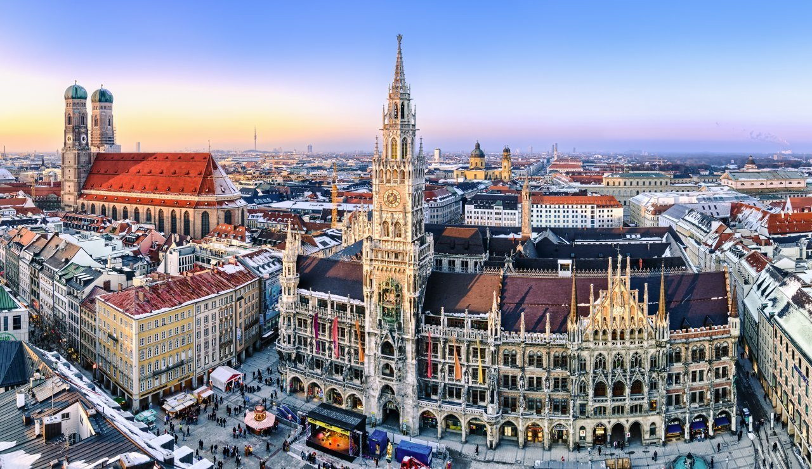
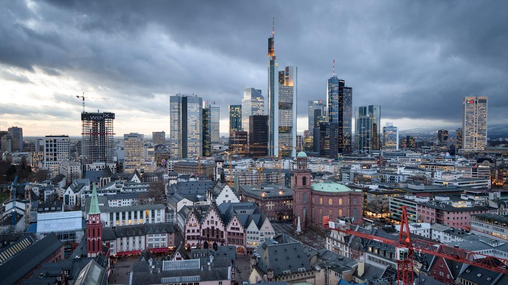
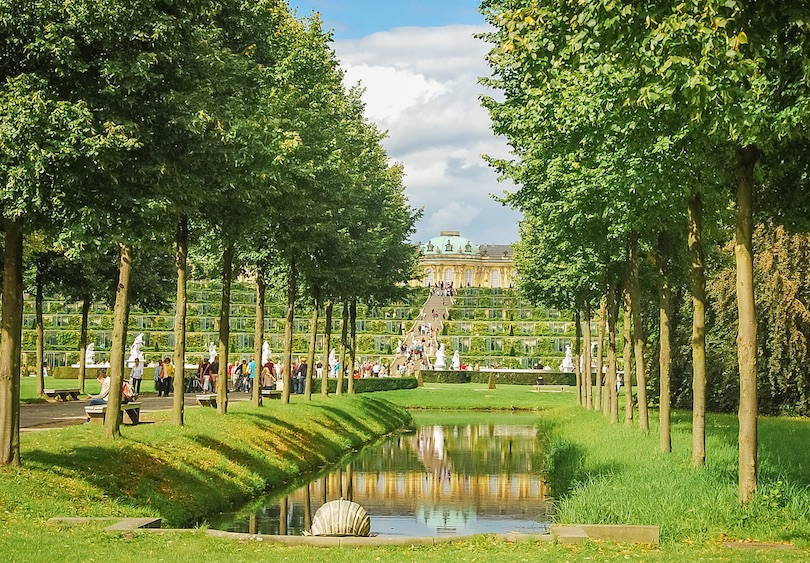
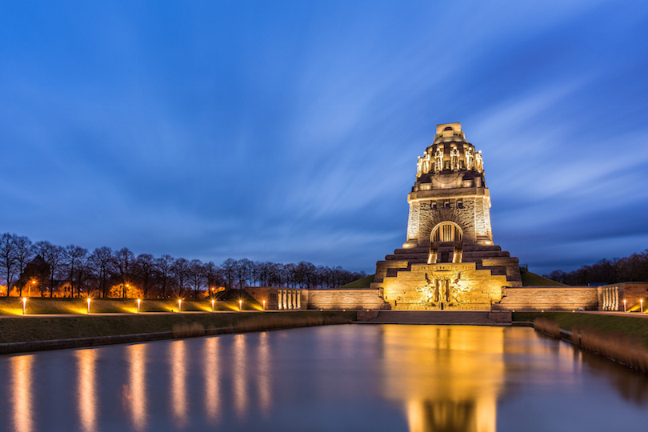
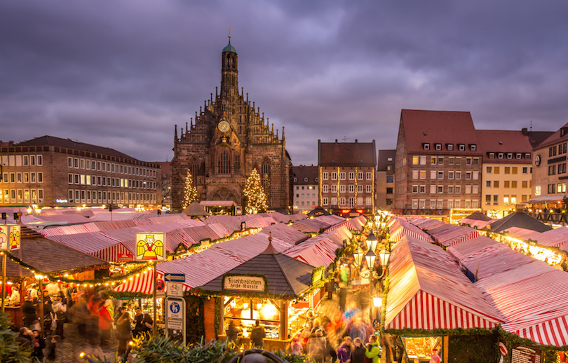
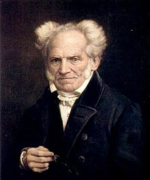

Popular Cities in Germany
Berlin

Berlin has the largest train station in Europe. Berlin is also nine times bigger than Paris.
Munich
The oldest building in Munich is a bathroom. Munich is furhter north than any major US city (excluding Alaska).
Frankfurt
Frankfurt is Germany's financial capital, along with being one of the largest airports in Europe.
Famouse Landmarks of Germany
Sanssouci Palace
Despite Frederick the Great’s wish to be buried in Sanssouci in 1786, his wish only came true in 1991, 205 years after his death. Sanssouci Palace also hosted many prominent philosophers and artists of that period.
Monument to the Battle of the Nations
The monument commemorates the defeat of Napoleon's French army at Leipzig, was paid mostly by the donations and the city of Leipzig.
The Nuremberg Christmas Market
The Nuremberg Christmas Market is one of the oldest Christmas Markets in Germany. It has been around since 1969.
Famous citizens of Germany
Albert Einstein

Albert Einstein renounced his German citizenship when he was 16. He also married the only female student in his physics class.
Arthur Schopenhaur
He is best known for his work "The World as Will and Representation, which characterizes the phenomenal world as the product of a blind and insatiable metaphysical will".
Johann Sebastian Bach

Johannn was a muscian and composer best known for "Brandenburg Concertos, and Goldberg Variations".